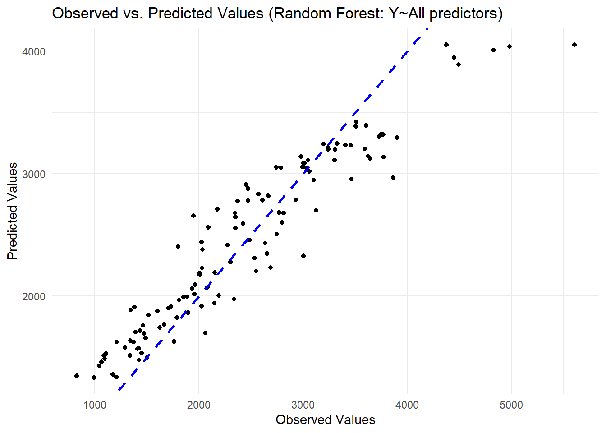
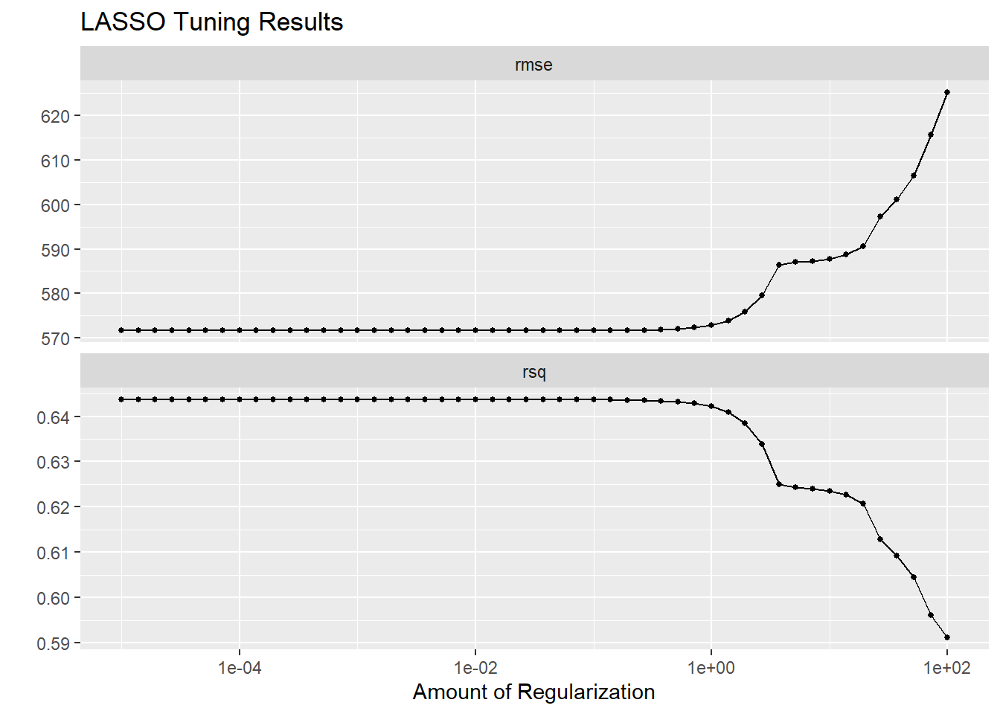
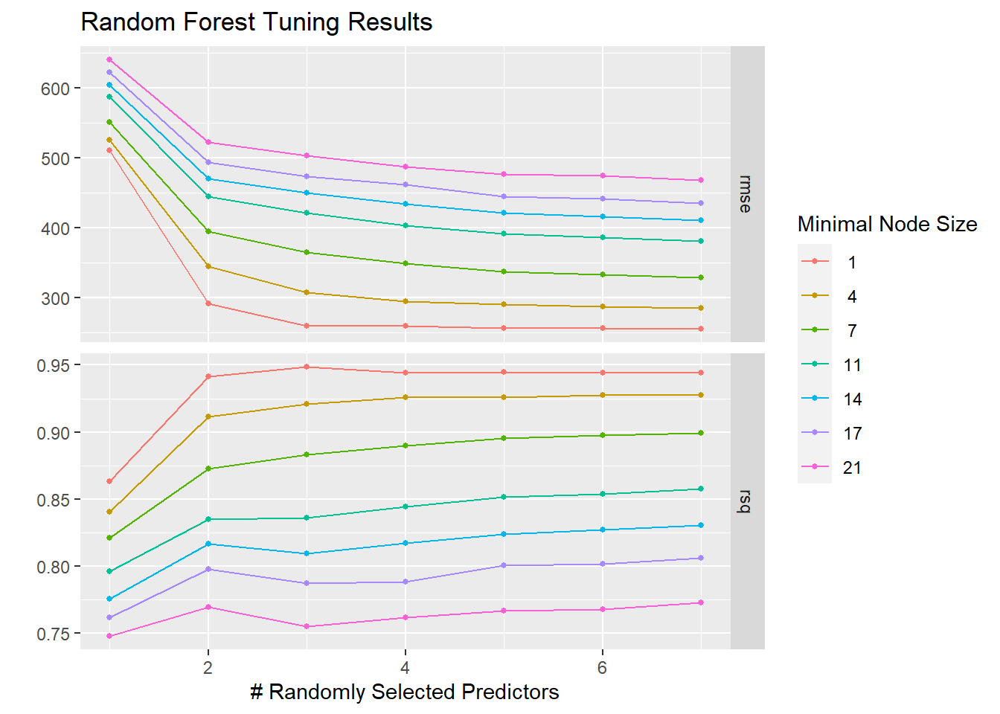
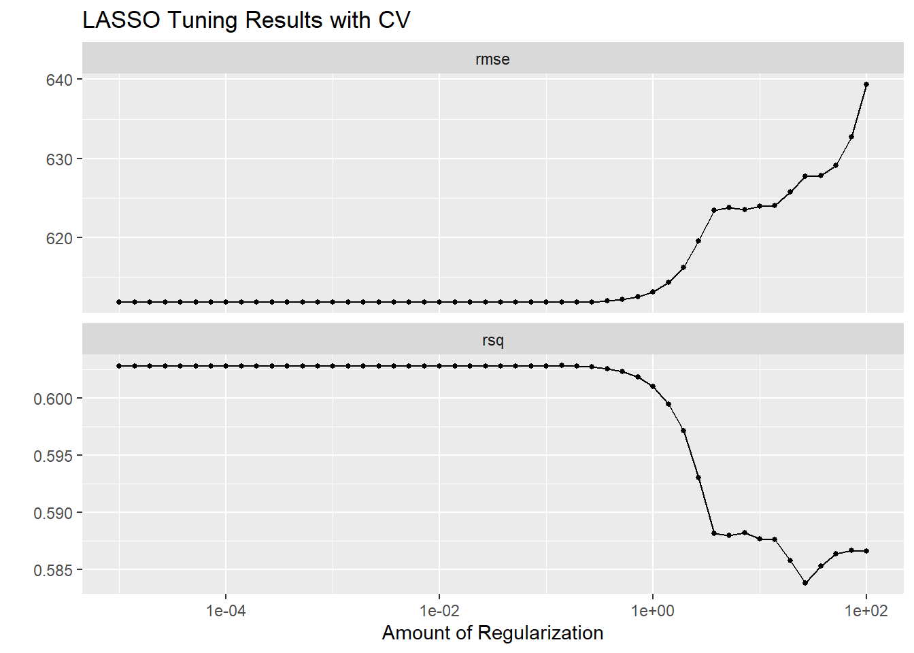
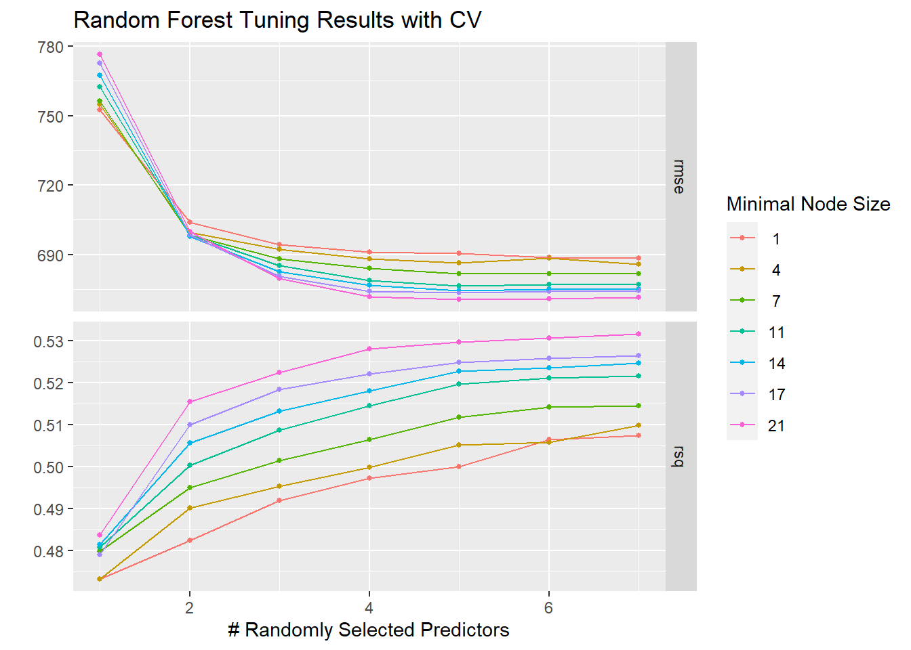

── Conflicts ────────────────────────────────────────── tidyverse_conflicts() ──
✖ dplyr::filter() masks stats::filter()
✖ dplyr::lag() masks stats::lag()
ℹ Use the conflicted package (<http://conflicted.r-lib.org/>) to force all conflicts to become errors
Warning: package 'glmnet' was built under R version 4.3.3
Loading required package: Matrix
Attaching package: 'Matrix'
The following objects are masked from 'package:tidyr':
expand, pack, unpack
Loaded glmnet 4.1-8
Write code that changes the RACE variable such that it combines categories 7 and 88 and puts them in a category called 3.
#check levels in RACEtable(module11$RACE)
1 2 7 88
74 36 2 8
#recode 7 and 88 as 3 in RACEmodule11$RACE <-ifelse(module11$RACE ==7| module11$RACE ==88, 3, module11$RACE)table(module11$RACE)
1 2 3
74 36 10
#set variables type for RACEmodule11<-module11 %>%mutate(RACE=as.factor(RACE),DOSE=as.numeric(DOSE))
Pairwise correlations
Make a correlation plot for the continuous variables
#make a correlation plot for the continuous variablespairs(module11[, c("Y","DOSE", "AGE", "WT", "HT")], main ="Scatter Plot Matrix for Y, DOSE, AGE, WT, and HT")
Y DOSE AGE WT HT
Y 1.00000000 0.71808396 0.01256372 -0.2128719 -0.15832972
DOSE 0.71808396 1.00000000 0.07201600 0.1012319 0.01877994
AGE 0.01256372 0.07201600 1.00000000 0.1196740 -0.35185806
WT -0.21287194 0.10123185 0.11967399 1.0000000 0.59975050
HT -0.15832972 0.01877994 -0.35185806 0.5997505 1.00000000
WT and HT seem strongly correlated according to the scatterplot, but the correlation coefficient is 0.6 which is lower than the threshold 0.9. There is no considerable collinearity among the variables.
Feature engineering
#create BMI based on WT and HTmodule11$BMI<-module11$WT/(module11$HT^2)
Model building
First fit
Fit a linear model with all predictors.
#fit linear model: Y~all predictorslin_mod <-linear_reg() %>%set_engine("lm")lin_fit <- lin_mod %>%fit(Y ~ ., data = module11)tidy(lin_fit)
# make predictions on the original datapredictions1 <-predict(lin_fit, new_data = module11)# Compute RMSE rmse_1 <-rmse_vec(module11$Y, predictions1$.pred)# print RMSEcat("RMSE:", rmse_1, "\n")
RMSE: 571.5954
#Plot observed vs predicted valuesplot1<-data.frame(observed=module11$Y,predicted=predictions1$.pred)ggplot(plot1 ,aes(x = observed, y = predicted)) +geom_point() +geom_abline(slope =1, intercept =0, linetype ="dashed", color ="blue", linewidth=1) +labs(x ="Observed Values", y ="Predicted Values", title ="Observed vs. Predicted Values (Linear: Y~All predictors)" ) +theme_minimal() # Use a minimal theme for aesthetics
# make predictions on the original datapredictions2 <-predict(lasso_fit, new_data = module11)# Compute RMSE rmse_2 <-rmse_vec(module11$Y, predictions2$.pred)# print RMSEcat("RMSE:", rmse_2, "\n")
RMSE: 571.6465
#Plot observed vs predicted valuesplot2<-data.frame(observed=module11$Y,predicted=predictions2$.pred)ggplot(plot2 ,aes(x = observed, y = predicted)) +geom_point() +geom_abline(slope =1, intercept =0, linetype ="dashed", color ="blue", linewidth=1) +labs(x ="Observed Values", y ="Predicted Values", title ="Observed vs. Predicted Values (LASSO: Y~All predictors)" ) +theme_minimal() # Use a minimal theme for aesthetics
parsnip model object
Ranger result
Call:
ranger::ranger(x = maybe_data_frame(x), y = y, seed = ~rngseed, num.threads = 1, verbose = FALSE)
Type: Regression
Number of trees: 500
Sample size: 120
Number of independent variables: 7
Mtry: 2
Target node size: 5
Variable importance mode: none
Splitrule: variance
OOB prediction error (MSE): 497625.2
R squared (OOB): 0.4618768
# make predictions on the original datapredictions3 <-predict(RF_fit, new_data = module11)# Compute RMSE rmse_3 <-rmse_vec(module11$Y, predictions3$.pred)# print RMSEcat("RMSE:", rmse_3, "\n")
RMSE: 361.6562
#Plot observed vs predicted valuesplot3<-data.frame(observed=module11$Y,predicted=predictions3$.pred)ggplot(plot3 ,aes(x = observed, y = predicted)) +geom_point() +geom_abline(slope =1, intercept =0, linetype ="dashed", color ="blue", linewidth=1) +labs(x ="Observed Values", y ="Predicted Values", title ="Observed vs. Predicted Values (Random Forest: Y~All predictors)" ) +theme_minimal() # Use a minimal theme for aesthetics

Model performance: 1. Linear : RMSE=572 2. LASSO : RMSE=572 3. Random Forest: RMSE=362 The linear model and LASSO have similar performance, likely due to facts that penalty parameter is too small and there is low collinearity among the predictors. The random forest performs the best, as it has the lowest RMSE, and data points on the observed vs predicted values plot are closer to the diagonal line.
Tuning the models
Tune the LASSO model
#define a grid of penalty parameters ranging from 1E-5 to 1E2penalty_grid <-grid_regular(penalty(range =c(log10(1E-5), log10(1E2))), levels =50)#specify the LASSO model lasso_mod_tune <-linear_reg(penalty =tune()) %>%set_engine("glmnet")#create a workflow to tune the LASSO modellasso_workflow <-workflow() %>%add_model(lasso_mod_tune) %>%add_formula(Y ~ .)#create apparent resamples as the same data is used for performance evaluationapparent_sample <-apparent(module11)#tune the LASSO model using tune_grid() lasso_tuned <-tune_grid(object = lasso_workflow,grid = penalty_grid,resamples=apparent_sample)#Show diagnostics of the LASSO tuninglasso_tuned %>%autoplot() +ggtitle("LASSO Tuning Results")

LASSO has better performance for low penalty values and gets worse if the penalty parameter increases. This is probably because the total numbers of predictors is too small. As penalty parameter increases, some predictors are dropped, and thus fewer predictors are left to account for the variation in the outcome Y. With fewer predictors left, the model is underfitted which leads to poorer performance of the model.
Tune the random forest
#set random seedset.seed(rngseed)#define a grid of penalty parameters range for mtry (1 to 7) and min_n (1 to 21)rf_grid <-grid_regular( mtry(range =c(1, 7)), min_n(range =c(1, 21)), levels =7)#specify the random forest RF_mod_tune <-rand_forest(mtry =tune(), min_n =tune(),trees=300) %>%set_engine("ranger", seed = rngseed) %>%set_mode("regression")#create a workflow to tune the RF modelrf_workflow <-workflow() %>%add_model(RF_mod_tune) %>%add_formula(Y ~ .)#tune the Random Forest model using tune_grid() RF_tuned <-tune_grid(object = rf_workflow,grid = rf_grid,resamples=apparent_sample)#Show diagnostics of the RF tuningRF_tuned %>%autoplot() +ggtitle("Random Forest Tuning Results")

Tuning with CV
Repeat tuning the LASSO and Random Forest models with cross-validation
Tune the LASSO model with cross-validation
#set random seedset.seed(rngseed)#create CV resamples (5-fold cross-validation, 5 times)cv_samples <-vfold_cv(module11, v =5, repeats =5)#use the same workflow to tune the LASSO model with cross-validationlasso_tuned_cv <-tune_grid(object = lasso_workflow,grid = penalty_grid,resamples=cv_samples)#Show diagnostics of the LASSO tuninglasso_tuned_cv %>%autoplot() +ggtitle("LASSO Tuning Results with CV")

Tune the random forest with cross-validation
#set random seedset.seed(rngseed)#use the same workflow to tune the Random Forest model with cross-validationRF_tuned_cv <-tune_grid(object = rf_workflow,grid = rf_grid,resamples=cv_samples)#show diagnostics of the RF tuningRF_tuned_cv %>%autoplot() +ggtitle("Random Forest Tuning Results with CV")

LASSO models with and without CV display similar pattern in the change of performance as penalty parameter increases. However, LASSO model without CV has better performance (lower RMSE) than LASSO model with CV given the same penalty value. This is probably due to fact that its performance evaluation is based on the same data used for model fitting.
Random forest models with and without CV also show similar pattern in the change of performance as hyperparameters change. Generally, model performance is higher with larger number of randomly selected predictors and larger minimal node sizes. When cross-validation is used, minimal node size seems to have a smaller impact on the performance of the model.
Based on results with cross-validation, LASSO model has lower RMSE and higher r-squared than random forest when penalty parameter is small. Thus, LASSO model has better performance than the random forest model.